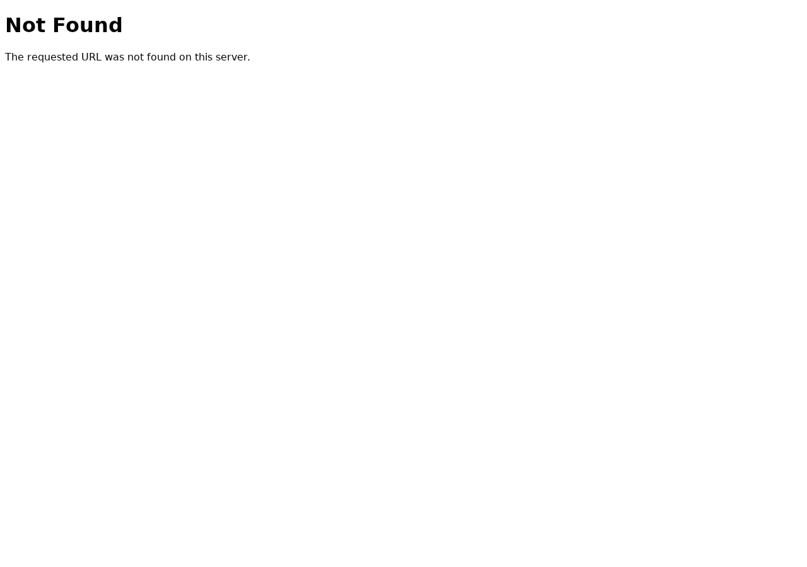

La nuova piattaforma Otofarma è stata creata: il dominio risponde, il certificato SSL funziona, i dati (categorie, prodotti, step) sono stati importati correttamente da Smartsound. Però le pagine del sito non si aprono: Apache non è configurato per gestire gli indirizzi interni. Serve una modifica alla configurazione del server da parte di chi lo gestisce (Mike Barbieri).
Il dominio nexumapp.otofarma.estendo.it è attivo e raggiungibile. Il certificato di sicurezza (HTTPS) è installato e valido. Il server risponde alle richieste.
Al primo accesso la piattaforma dava un errore generico (pagina bianca). La causa era una chiave di sicurezza non configurata. È stata generata e il problema è stato risolto immediatamente.
Come richiesto, abbiamo copiato tutte le categorie (12), i prodotti con le fasce di prezzo (5), le configurazioni dei passaggi di vendita (40) e l'archivio marche/modelli (3.388 voci) dalla piattaforma Smartsound. I dati sono pronti — quando il sito sarà accessibile, saranno già visibili.
Provando ad accedere alla pagina di login o a qualsiasi altra sezione, il sito mostra “Not Found”. Il problema non è nei dati o nell'applicazione, ma nella configurazione del server web (Apache): non è stata attivata un'opzione necessaria per far funzionare gli indirizzi delle pagine. È una modifica che richiede accesso amministrativo al server.

Serve che Mike Barbieri aggiunga una riga alla configurazione del server. È un'operazione rapida (un minuto). Una volta fatto, la piattaforma dovrebbe funzionare immediatamente con i dati già importati.
| Campo | Valore |
|---|---|
| Target | nexumapp.otofarma.estendo.it |
| Server | SRVAPPWEB (62.173.167.212) |
| Path | /var/www/html/nexum-otofarma/current/public |
| Database | nexum-otofarma |
| Scenario | Post-deploy / Setup verification |
| Verdict | BLOCKED — attesa config Apache |
| Check | Stato |
|---|---|
| DNS → IP | OK |
| SSL/HTTPS | OK (Let's Encrypt) |
| APP_KEY | OK (generata) |
| Database connessione | OK |
| Taxonomies (12) | Importate |
| Products (5) | Importati |
| Productsteps (40) | Importati |
| Symbols (3.388) | Importati |
| Utente test + store | Creati |
Il vhost Apache manca di AllowOverride All. Senza questa direttiva il .htaccess di Laravel viene ignorato e ogni URL non-fisico dà 404.